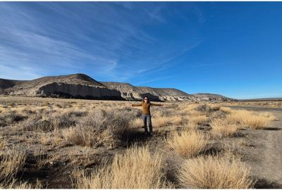

Sobre Mí

Soy Rosita Ávila
Durante años funcioné al límite. Tenía información espiritual, certificaciones, herramientas. Y aun así mi vida real era un caos. Sentía un vacío constante a pesar de «hacerlo todo bien».
Hasta que entendí algo que lo cambió todo: Mi sensibilidad no era el error. Mi falta de estructura sí.
Soy Docente de base y Magíster en Educación, con más de una década en el sistema tradicional. Sé cómo se construye el aprendizaje y el orden mental. Y llevo más de 20 años caminando entre dos mundos: la Educación y la Energía.
Lo que aprendí en ese camino es que para sostener alto rendimiento no basta con información. Se necesita arquitectura.
No prometo sanar. Instalo infraestructura para que tu energía deje de dispersarse y empiece a sostenerte.
Así nació Vuelve a Ti. No como un método mágico, sino como un sistema para mujeres sensibles que funcionan... pero están agotadas.
Si estás lista para dejar de sobrevivir y empezar a operar con coherencia interna, estás en el lugar correcto.